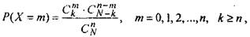
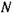
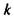
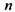
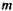
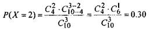

Гіпергеометричний розподіл
Як уже відомо, біноміальний розподіл
застосовується, якщо ймовірність появи події в
кожному незалежному випробуванні постійна. Однак, якщо кількість
випробувань невелика, то ймовірність появи
події може змінюватись у кожному випробувані, тобто ймовірність появи події не
буде постійною. В цьому випадку використовується гіпергеометричний
розподіл.
Цей розподіл має
такий вигляд

(24)
де

- об'єм генеральної сукупності елементів;

- число
елементів сукупності, що ідентифікуються як ті, які мають саме
властивості генеральної сукупності;

- об'єм вибіркової сукупності;

- число
елементів з певною властивістю.
Приклад 6. Серед 10 автомобілів 4 мають неполадки в передачі.
Яка
ймовірність, що з трьох випадково
вибраних автомобілів два будуть з несправною передачею? Розв'язання. Маємо
 Використовуючи
Використовуючи
гіпергеометричний розподіл,
отримаємо

тобто існує 30% ймовірності, що із
трьох автомобілів, вибраних навмання, два будуть мати дефекти в
передачі.